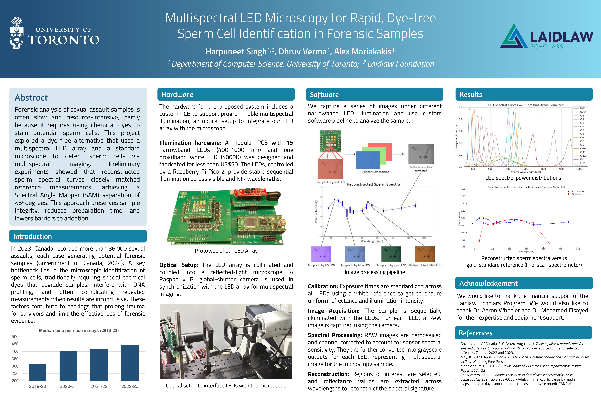

2026CONFERENCE POSTER

Multispectral LED microscopy for rapid, dye-free sperm cell identification in forensic samples
Harpuneet Singh, Dhruv Verma, and Alex Mariakakis
F1000Research 15:311 · Published 24 February 2026
Presented at the Laidlaw Scholars Annual Conferences 2025
Combining a custom multispectral LED array and a standard microscope to offer a dye-free approach to identifying sperm cells in forensic samples. The work explores preserving sample integrity while reducing preparation time and equipment barriers.
Show citation
Singh H, Verma D, Mariakakis A. Multispectral LED microscopy for rapid, dye-free sperm cell identification in forensic samples. F1000Research. 2026;15:311. Conference poster. doi:10.7490/f1000research.1120482.1.